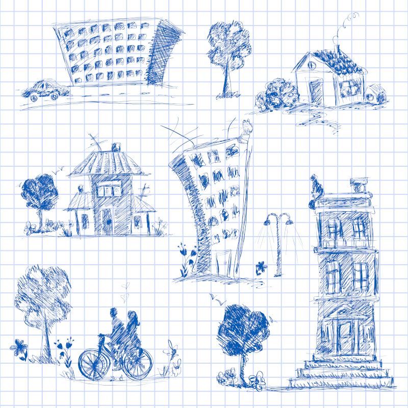

Lucas é um adulto de 27 anos que é formado em engenharia, algo que ele nunca gostou.
Formou-se na Faculdade Santana, uma boa faculdade do ramo, mas sua falta de interesse na área prejudicou seu aprendizado, então Lucas não se tornou um engenheiro tão bom.
Ele está atualmente desempregado, e precisa de um trabalho para pagar as contas.
A mãe de Lucas contou a ele que acabou de surgir uma vaga no Escritória Scolari, de análise de dados.
Porém, ele deseja continuar na área da engenharia, para que seus anos de faculdade nãoo sejam desperdiçados.
O que Lucas deveria fazer?